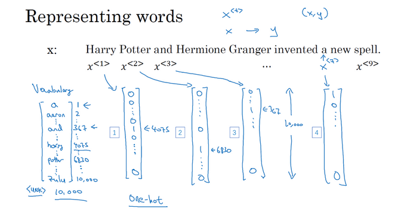
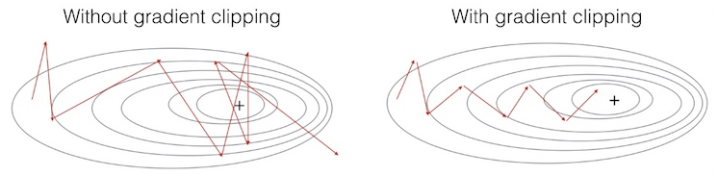
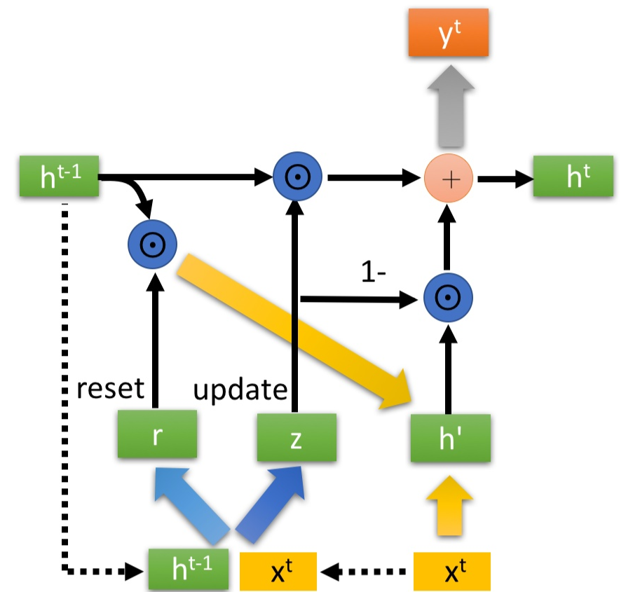

前言
序列模型（Sequence Model）是深度学习最令人激动的领域之一。循环神经网络（Recurrent Neural Network, RNN）也已变革了语音识别（Speech Recognition）、自然语言处理（Natural Language Process, NLP）等领域。
本文是我在学习吴恩达深度学习课程中的序列模型一章的总结与思考，同时参考了一些书籍和网上的资料编写而成。写这篇文章的主要目的是加深自己对于该模型的理解，如有错误欢迎在评论区指出，非常感谢！
从问题出发
与之前的讲解类似，我们在这里依旧围绕自然语言处理中的经典问题词性标注问题进行讨论和解释。
- 给定一个句子X，输出句子中每一个单词对应的词性。

什么是序列模型
序列模型（Sequence Model）的相关知识我已经在之前的博客中有所介绍，常规机器学习方法中的隐马尔可夫模型和条件随机场模型都可以用来解决序列标注问题，它们其实就是一类序列模型。深度学习的序列模型近年来已经成为自然语言处理的最重要模型之一，主要包括循环神经网络（RNN）以及它的一些变体（LSTM、GRU等）。
序列模型指的是模型的输入X或者输出Y是一个序列，例如：词性标注任务中，输入可以是连续的单词组成的句子，而输出可以是句子各单词的词性序列。
下面是一些序列模型适用的例子，可以看到，它不仅适用于自然语言处理的相关任务，还在计算机视觉、语音识别等领域应用广泛。
这些问题都可以通过有监督的学习（Supervised Learning），通过给定样本的特征向量X和标签Y进行训练。这几个例子的区别是，有些是X和Y都是序列数据，有些只有X或Y是序列数据，另外有些X和Y虽然都是序列数据，但序列的长度并不相等。
可以看到：
- 语音识别、DNA序列分析和命名实体识别任务的输入X和输出Y都是序列数据，且序列长度相等。
- 机器翻译的输入X和输出Y都是序列数据，但序列长度不一定相等。因为一句英文文本经过翻译后，所得到的中文文本所含单词数不一定是一样的。
- 情感分析和视频行为识别的输入X是序列数据，而输出Y只有一个维度，即情感的类别或者行为的类别。
- 音乐生成任务的输出Y是序列数据（一段音乐），而输入X 可以是空集，也可以是个单一的整数，这个数可能指代你想要生成的音乐风格，也可能是你想要生成的那首曲子的头几个音符。
后面我们将知道，这些不同类别的序列模型都可以使用同一个深度学习模型来解决，那就是循环神经网络模型（RNN），我们只需要对它进行一些结构上的调整即可。
什么是循环神经网络
符号定义
首先，我们定义一些接下来的讲解中需要使用到的符号：
| 符号 | 含义 |
|---|---|
| $x^{(i)\langle t \rangle}$ | 第$i$个输入序列的第$t$个序列元素，即第$i$个输入句子的第$t$个单词 |
| $y^{(i)\langle t \rangle}$ | 第$i$个输出序列的第$t$个序列元素，即第$i$个句子的词性标注结果的第$t$个词性 |
| $T_x^{(i)}$ | 第$i$个输入序列的长度 ，即第$i$个句子的单词数目（每条数据的序列长度可以不一样） |
| $T_y^{(i)}$ | 第$i$个输出序列的长度 ，即第$i$个句子的词性数目（词性标注任务中：$T_x^{(i)}=T_y^{(i)}$） |
以词性标注任务为例，上述符号的含义如下图所示：
如何表示词
接下来，我们需要考虑的问题是怎么表示输入序列（也就是句子）中的词。在这里，我们先使用一种最为简单的方法，也就是one-hot表示法，来表示句子中的词。这个方法无法捕捉词语本身丰富的语义信息。日后，我将介绍一些预训练的语言模型，如Word2Vec和Bert等，它们通过词嵌入（Word Embedding）的方法使用词嵌入向量表示词，捕捉了词语的含义和词间的关系，替换one-hot向量作为深度学习模型的输入，刷新了NLP中许多任务的最佳表现。
one-hot表示法在我的对数线性模型博客中有所介绍，它是表示离散特征的一种方法。使用它来表示单词，我们需要进行以下几步：
- 建立一个向量，包含常用的词汇，形成一个词汇表（vocabulary） 。词汇表的大小是人为设定的，这里，我们使用10,000个单词来构建我们的词汇表。 对于一般规模的商业应用来说30,000到50,000词大小的词典比较常见，但是100,000词的也不是没有，而且有些大型互联网公司会用百万词，甚至更大的词典。
- 接下来，我们为单词建立one-hot向量，假如一个词在词汇表中的序号为1234，那么它的one-hot向量就是在1234行为1，其余行均为0的10000维列向量。
- 特别地，我们需要考虑未登录词、开始标记、结尾标记等情况。未登录词指的是不在词汇表中的单词，我们需要在词汇表添加标记\UNK来表示它们。此外，在构建语言模型、进行机器翻译等过程中，我们还需要使用到开始标记、结尾标记，它们表示的是句子的开始、结尾位置。例如，一旦语言模型生成了结尾标记，我们就可以认为句子生成完毕。我们在词汇表中添加\Start和\End来表示他们。
下图是吴恩达老师课件中的例子：

循环神经网络模型的基本结构
在介绍循环神经网络之前，我们尝试利用最简单的标准神经网络——反向传播神经网络（BPNN）来进行序列标注。我们可以将句子中的所有词的one-hot向量拼接作为标准神经网络的输入，经过若干隐藏层后输出词性标注结果，如下图所示：
但这个神经网络只适用于单个词的词性标注（分类问题），而不适用于整个句子的词性标注（序列标注，结构化分类问题），主要原因有以下几种：
- 不同的句子的长度不一样，意味着BPNN的输入层和输出层维度需要不断地改变。
- 更重要的是，BPNN无法共享从文本的不同位置上学到的特征。 比如网络学习到Harry在第一个位置可能是名词，但在其他位置却无法识别了。我们希望模型能够像卷积神经网络一样，在图像上某一个位置检测到的边缘特征能够应用到其他位置上。
- 还有一点是模型的参数过于庞大，计算量太大。因为每个单词都是10000维的one-hot向量，输入层和输出层的单元太多。
为了解决BPNN在序列化标注问题中的缺陷，科学家们提出了一种神经网络的序列模型：循环神经网络模型（Recurrent Neural Network Model）。
其中，每个时间步（time step，也就是序列的每个状态）的RNN单元如下图所示：
可以看到：每个时间步的RNN单元，其实都是一个简单的单隐藏层BPNN。为了增强模型的表示能力，隐藏层使用tanh激活函数（Activation Function）增加非线性（这里有个疑问：为什么RNN中tanh比ReLU更常用呢）；为了计算当前时间步各词性的概率进行分类预测，输出层使用softmax激活函数进行概率归一化。上图右侧的公式即为RNN的前向传播公式（ Forward Propagation）。
RNN的特别之处在于：当$x^{\langle t \rangle}$输入到当前时间步对应的RNN单元时，同时会将上一个时间步RNN单元的隐藏层的激活值$a^{\langle t-1 \rangle}$加入计算。特别的，第一层的激活值输入$a^{\langle 0 \rangle}$一般是定义为0向量。 也就是说，对于每一个时间步的预测，其输入信息不仅来自于当前序列元素$x^{\langle t \rangle}$，还间接来自于之前的所有序列元素（因为输入了$a^{\langle t-1 \rangle}$）。
上述RNN解决了BPNN用于序列标注的缺陷：
- 每个时间步的RNN单元，其输入、输出的维度都是一致的。例如我们使用单隐藏层RNN单元，隐藏层的神经元数目设为100，则$a^{\langle t-1 \rangle}$为100维列向量，$x^{\langle t \rangle}$为10000维的one-hot向量，每个RNN单元的输入固定为10100维，输出的维度与训练集中的词性数目相等。对于不同长度的输入序列，我们只需要修改RNN单元的个数即可。
- 每一个时间步的RNN单元共享参数，即可以共享从文本的不同位置上学到的特征，也就是上面循环神经网络示意图中的三个参数矩阵$W_{aa}$,$W_{ax}$,$W_{ya}$和对应的偏差项（bias）。
- 模型的参数量减少了。RNN中我们只有三组固定大小的参数，而原先的BPNN光是输入层和第一个隐藏层之间的全连接都需要大量参数，因为BPNN输入的每个词的one-hot向量之间不共享参数矩阵。
需要注意的是，这里只是画了一个最基本的RNN，只有一个隐藏层，实际上，我们可以加大隐藏层数量，形成深度RNN（Deep RNN）。 对于标准CNN来说，可以有很多层，比如100个隐藏层，但对RNN来说3层就已经很深了，因为RNN还有很长的时间维度（temporal dimension），即便3层RNN的训练难度也很大。
循环神经网络模型的反向传播
在上一节，我们已经介绍了RNN前向传播的基本流程。每一个时间步的RNN单元使用上一个时间步传来的激活值和当前序列元素的输入进行一次或多次全连接层运算，最后所得的激活值，一方面继续传给下一个时间步，另一方面输入softmax层计算当前序列元素的标注输出。具体过程如下图所示：

接下来，我们需要定义模型的损失函数，以便进行梯度下降优化，拟合出特征权重参数。
与常规的Softmax输出层的BPNN类似，我们在这里定义第$t$个时间步的损失函数为交叉熵损失函数（Cross Entropy Loss）：
$$
Loss^{\langle t \rangle}(\hat y^{(i)\langle t \rangle},y^{(i)\langle t \rangle})=- y^{(i)\langle t \rangle}log (\hat y^{(i)\langle t \rangle})
$$
整个序列的损失函数定义为各时间步损失函数之和：
$$
Loss(\hat y^{(i)},y^{(i)})=\sum_{t=1}^{T_x^{(i)}}Loss^{\langle t \rangle}(\hat y^{(i)\langle t \rangle},y^{(i)\langle t \rangle})
$$
接下来，便可以使用各种凸优化方法进行迭代计算，求解最优参数。假设我们使用梯度下降算法进行参数拟合，那么各参数的梯度反向传播计算如下所示：

上述反向传播可以自己推导一遍，加深印象。反向传播的推导并不复杂，它其实就是一种动态规划算法，状态转移方程中使用了求导的链式法则而已。
具体的梯度计算公式（我推的不是最简形式，最简形式可以参考前向传播公式自己化简）如下：
$$
\frac{dLoss^{(i)}}{dW_{ya}}=\sum_{t=1}^{T_x^{(i)}}\frac{dLoss^{(i)\langle t \rangle}}{d \hat y^{(i)\langle t \rangle}}\frac{d \hat y^{(i)\langle t \rangle}}{dW_{ya}}……(1)
$$
$$
\frac{dLoss^{(i)}}{dW_{aa}}=\sum_{t=1}^{T_x^{(i)}}\sum_{k=1}^{t}\frac{dLoss^{(i)\langle t \rangle}}{d \hat y^{(i)\langle t \rangle}}\frac{d \hat y^{(i)\langle t \rangle}}{da^{\langle t \rangle}}(\prod_{j=k+1}^t\frac{da^{\langle j \rangle}}{da^{\langle j-1 \rangle}})\frac{da^{\langle k \rangle}}{dW_{aa}}……(2)
$$
$$
\frac{dLoss^{(i)}}{dW_{ax}}=\sum_{t=1}^{T_x^{(i)}}\sum_{k=1}^{t}\frac{dLoss^{(i)\langle t \rangle}}{d \hat y^{(i)\langle t \rangle}}\frac{d \hat y^{(i)\langle t \rangle}}{da^{\langle t \rangle}}(\prod_{j=k+1}^t\frac{da^{\langle j \rangle}}{da^{\langle j-1 \rangle}})\frac{da^{\langle k \rangle}}{dW_{aa}}……(2)
$$
循环神经网络的不同架构
我们在之前提到了许多不同的序列任务都可以使用RNN来完成，我们只需要调整RNN的结构。自然语言处理中，主要的序列任务可以分为以下几类：
- One to many：一对多，如语言模型（Language Model），主要用于文本生成，如AI写诗等，我们通常只给出一个开头的字或词，让语言模型帮我们生成完整的句子序列。
- Many to one：多对一，如文本分类，我们通常给出一个句子序列，让语言模型输出其类别。
- Many to Many（$T_x=T_y$）：输入输出序列长度相等的多对多，如词性标注任务。
- Many to Many（$T_x!=T_y$）：输入输出序列长度不相等的多对多，如机器翻译。
在前面的几节，我们以词性标注为例，给出了输入输出序列长度相等的多对多RNN模型的基本结构，更多的结构如下图所示：
- 左下角就是之前接触的最基本的RNN，Many to many并且$T_x=T_y$。
- Many to one结构，与标准结构相比，将每个时间步的输出都去除，只保留最后一步的输出。
- One to one结构，就是标准神经网络。
- One to many结构，仅在第一个时间步输入唯一的序列数据，接下来每一个时间步的输入都来自上一步的输出（Ngram语言模型）。
- Many to many并且$T_x!=T_y$。则将输入时间步和输出时间步完全拆分。前半部分称之为编码器（encoder），后半部分称之为解码器（decoder）。例如，机器翻译任务中，前半部分将源文本进行编码，并将编码所得结果输入后半部分的解码器。后半部分的解码器其实就是一个语言模型，采用集束搜索（Beam Search）等方式选择出生成的最大概率序列作为翻译的结果。
双向循环神经网络
在实际预测中，我们可能不仅需要当前时间步之前的信息，也需要当前时间步之后的信息。例如，一个单词被预测为名词，可能不仅与前一个单词是什么有关，也与后一个单词是什么有关。我们在之前提出的RNN架构，只能使用到之前时间步的信息，为了解决这个缺陷，我们可以使用双向循环神经网络（BRNN）。
我在这里借用吴恩达的PPT：
如上图所示，BRNN首先包含了前向RNN的基本架构，接着为每个时间步添加反向循环单元。最后，每个时间步的预测输出，需要同时考虑前向激活函数和反向激活函数。
BRNN中，每个时间步的预测输出要等所有序列扫描结束后才能输出。但这也造成了一个弱点，比如语音识别，需要等用户说完一整句才开始识别，所以真正的实时语音识别，会使用更为复杂的模块，而不是仅使用BRNN。
循环神经网络中的梯度消失和梯度爆炸
我们在之前已经介绍了RNN中的梯度反向传播计算，与其他深度学习的神经网络一样， RNN也面临梯度消失（vanishing gradients）和梯度爆炸（exploding gradients） 的问题，尤其是梯度消失的问题，更难解决。
首先，我们来看RNN单元隐藏层中最为常用的激活函数tanh的函数曲线以及它的导数曲线：
可以看到，tanh的导数值取值范围位于闭区间[0,1]上。
在一个最基本的BPNN中，反向传播计算各参数的梯度时，需要使用到权重值、激活函数的导数以及预测值和真实值的误差。 如果我们使用正态分布初始化权重w，那么w都是0-1之间的小数，而tanh激活函数的导数也是0-1之间的数，经过反向传播的连乘后，随着相距的层数增加，连乘的次数也将被多，结果会变的很小，导致梯度消失。若我们初始化的w是很大的数，大到乘以激活函数的导数都大于1，那么经过多次连乘后，可能会导致求偏导的结果很大，形成梯度爆炸。
事实上，tanh激活函数已经算比较好了，如果你使用sigmoid激活函数，那么它的导数值取值范围为[0,0.25]，更容易造成梯度消失问题。事实上，比较好的一种激活函数为ReLu激活函数（修正线性单元），它的导数值永远只有0或者1，所以可以很好地解决梯度消失问题。（疑问： RNN 中一个经典的问题是如何避免梯度消失。造成这个问题的一个很重要原因是采用了 tanh 作为激活函数，很容易造成梯度消失问题。所以为什么不换成ReLU呢？）
我们再回头看一看RNN的反向传播公式：
RNN 中的梯度消失/梯度爆炸和普通的 MLP 或者深层 CNN 中梯度消失/梯度爆炸的含义不一样。MLP/CNN 中不同的层有不同的参数，各是各的梯度；而 RNN 中同样的权重在各个时间步共享，最终的梯度为各个时间步的梯度的和。 所以，RNN 中总的梯度是不会消失的。即便因为连乘的原因梯度越传越弱，那也只是远距离的梯度消失，由于近距离的梯度不会消失，所有梯度之和便不会消失。RNN 所谓梯度消失的真正含义是，梯度被近距离梯度主导，导致模型难以学到远距离的依赖关系。（可以参考反向传播那一节的式（2）和式（3）理解，当k和t距离越远时，连乘的次数将越多）
梯度爆炸比较容易解决，我们可以使用梯度剪切（gradient clipping），即梯度如果超过一定阈值，则缩放梯度。

相对而言，梯度消失问题很难解决，这导致后面的时间步的输出很难通过反向传播影响到前面的参数计算，从而使RNN难以捕捉长距离的依赖。而在自然语言处理任务中，长距离依赖通常是比较重要的，能够很大地影响模型的性能。
为了解决梯度消失问题，科学家们在基本RNN的基础上提出了改进，将基本的RNN单元修改为使用了门（Gate)来控制记忆的长短期记忆单元（LSTM）和门控循环单元（GRU）。
门控循环单元
门控循环单元（Gated Recurrent Unit，GRU），是在基本RNN单元的基础上改进，帮助RNN缓解（无法解决）梯度消失问题，从而更好的捕捉长距离依赖。 它其实是长短期记忆单元的简化版，这里我们先介绍简单的版本。
我们以一个语言模型为例，假设我们需要构建一个语言模型根据训练文本自动生成句子，有如下两个句子：
The ==cat==, which already ate …., ==was== full. The ==cats==, which already ate …., ==were== full.
中间是一个很长的从句，结尾处谓语（be）的形式要根据最开始的主语（cat）的单复数决定。这说明语言中经常会有长距离的依赖。但基本的RNN对这种问题的处理效果并不好，它无法捕捉到这种长距离依赖。
首先，我们给出吴恩达老师画出的基本RNN单元（这里的$W_a$和$b_a$由原先的$W_{ax}$、$W_{aa}$和$b_{ax}$、$b_{aa}$堆叠而成，方便表述）：
GRU经引入一个新的变量$c$，作为记忆细胞（Memory Cell），其作用是提供一定比特的记忆，比如上例中记忆cat是单数还是负数。在时间$t$，记忆细胞的值记为$c^{\langle t \rangle}$。在GRU中，虽然输出的激活函数$a^{\langle t \rangle}$总是和$c^{\langle t \rangle}$相等，但我们还是提供两个标记区别，主要是为了和后面LSTM保持标记的统一性。
接下来是GRU的公式：
首先是$\widetilde{c}$，代表将用于替换$c^{\langle t \rangle}$的候选（candidate）值：
$$
\widetilde{c}^{\langle t \rangle}=tanh(W_c[c^{\langle t-1 \rangle},x^{\langle t \rangle}]+b_c)
$$
接着，我们引入GRU的重要思想——门（Gate），我们用$Γ_u$表示 ：
$$
Γ_u=\sigma(W_u[c^{\langle t-1 \rangle},x^{\langle t \rangle}]+b_u)
$$
这里的$Γ_u$代表的是更新门（update Gate），激活函数$\sigma$使用sigmoid函数，从而使更新门的取值缩放到[0,1]，它表示的是当前时间步更新记忆细胞$c^{\langle t \rangle}$的程度，越接近1，表示更新的程度越大，具体公式如下：
$$
c^{\langle t \rangle}=Γ_u \times \widetilde{c}+(1-Γ_u) \times c^{\langle t-1 \rangle}
$$
上述公式究竟有什么用呢？ 前面说$\widetilde{c}$只是候选，是因为决定权在于$Γ_u$，$Γ_u$决定了什么时候去更新$c^{\langle t \rangle}$。对应上面的例子，这个机制可能就是，从读取到cat开始，就一直在$c^{\langle t \rangle}$记录着主语是单数，直到遇到谓语was，$c^{\langle t \rangle}$认为就没必要再记录下去了，即开始更新$c^{\langle t \rangle}$。
把上述GRU单元的公式，它的结构用图表示如下：
可以看到，GRU仅仅使用了一个门就实现了更新记忆细胞和遗忘记忆细胞，也就是让$(1-Γ_u)$控制遗忘的程度。而LSTM中使用了独立的遗忘门（forget gate）来控制遗忘，所以参数更多一些，训练起来也更慢。
通过使用更新门，我们可以选择性的更新记忆细胞（在GRU中就是上一个时间步的隐藏层激活值输出，包含了前面所有时间步内的信息）。当更新门$Γ_u$的值总为0时，相当于保持了记忆，在我们的例子中，就是在谓语was的时间步和主语cat的时间步之间开辟了一条直达的远距离路径。 梯度在这条路径上可以无损地传递，从而不会消失。这有些类似于CNN的 ResNet 中的跳跃连接（short cut）。
此外，完整的GRU单元还设置了一个相关门 （Relevance Gate，也叫重置门Reset Gate） $Γ_r$，用于表示$\widetilde{c}$和$c^{\langle t -1 \rangle}$的相关性：
$$
Γ_r=\sigma(W_r[c^{\langle t-1 \rangle},x^{\langle t \rangle}]+b_r)
$$
候选值$\widetilde{c}$的计算公式修改为：
$$
\widetilde{c}^{\langle t \rangle}=tanh(W_c[Γ_r \times c^{\langle t-1 \rangle},x^{\langle t \rangle}]+b_c)
$$
完整的GRU内部结构如下图所示：

长短期记忆单元
长短期记忆单元（Long Short Term Memory）可以看作是门控循环单元GRU的复杂版。事实上， 在深度学习的历史上，LSTM也是更早出现的，而GRU是最近才发明出来的，它可能源于Pavia在更加复杂的LSTM模型中做出的简化。
以下为GRU和LSTM二者的公式对比：
可以看到，GRU的主要特点在于：
$a^{\langle t \rangle}$总是和$c^{\langle t \rangle}$相等。
使用了两个门，即更新门$Γ_u$和相关门$Γ_r$。
而LSTM相对于GRU的变化在于：
- $a^{\langle t \rangle}$和$c^{\langle t \rangle}$不相等。
- 使用了三个门：
- 去掉了用于计算候选值$\widetilde{c}$的相关门$Γ_r$。
- 增加了用于控制遗忘的遗忘门（Forget Gate）$Γ_f$，替换了GRU中的$1-Γ_r$。
- 增加了用于计算$a^{\langle t \rangle}$的输出门$Γ_o$。
完整的LSTM单元如下图所示：
完整的LSTM网络如下图所示：
可以看到，LSTM网络中，梯度的传播相较于基本RNN多了许多路径。其中，有一条贯穿$c^{\langle t \rangle}$的”高速公路“。与CNN的 ResNet 中的跳跃连接（short cut）类似，在这条路径上，假设遗忘门$Γ_f$保持等于1，那么梯度将无损地在需要进行远距离依赖的时间步间传输。 由于总的远距离梯度 = 各条路径的远距离梯度之和，即便其他远距离路径梯度消失了，只要保证有一条远距离路径梯度不消失，总的远距离梯度就不会消失（正常梯度 + 消失梯度 = 正常梯度）。因此 LSTM 通过改善一条路径上的梯度问题拯救了总体的远距离梯度。
另外需要强调的是，LSTM除了在结构上天然地克服了梯度消失的问题，更重要的是具有更多的参数来控制模型；通过四倍于RNN的参数量，可以更加精细地预测时间序列变量。
GRU与LSTM的比较
吴恩达老师的原话：
GRU的优点是这是个更加简单的模型，所以更容易创建一个更大的网络，而且它只有两个门，在计算性上也运行得更快，然后它可以扩大模型的规模。
但是LSTM更加强大和灵活，因为它有三个门而不是两个。如果你想选一个使用，我认为LSTM在历史进程上是个更优先的选择，所以如果你必须选一个，我感觉今天大部分的人还是会把LSTM作为默认的选择来尝试。虽然我认为最近几年GRU获得了很多支持，而且我感觉越来越多的团队也正在使用GRU，因为它更加简单，而且还效果还不错，它更容易适应规模更加大的问题。
总结
以上就是我对循环神经网络（RNN）进行学习时的总结了。RNN是NLP深度学习最重要的模型之一，许多开创性的工作就是在它的基础上完成的，包括我的大创课题上下位网络构建的SOTA目前也是由LSTM保持着。接下来，我将介绍常见的预训练模型的基本原理（word2vec，bert等），未来还将介绍NLP深度学习中的Attention机制以及常用的优化、调参算法。